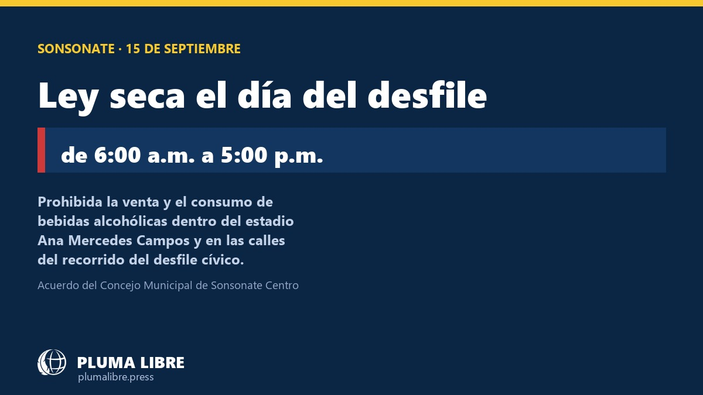
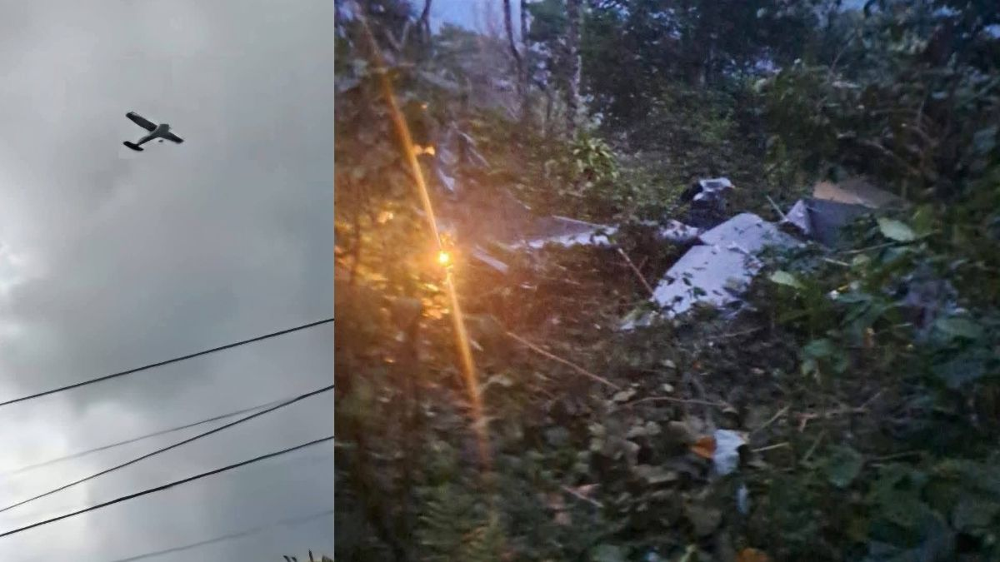

Últimas Noticias




Internacional
Le cayó un rayo camino al dentista y sobrevivió


Tecnología
La AI preocupe a sus propios creadores


Internacional
Muere Dolly Parton a los 80 años



Internacional
TRAGEDIA AÉREA EN GUATEMALA

Seguinos para más noticias de Sonsonate